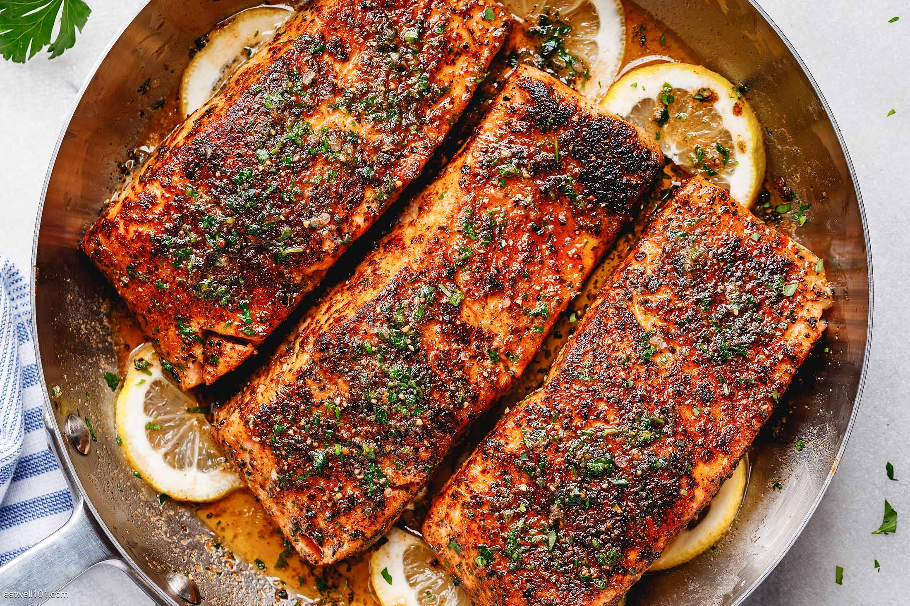

Description
Fire up succulent blackened salmon with an exciting blend of Cajun-style spices!
- 2 tablespoons ground paprika
- 1 tablespoon ground cayenne pepper
- 4 salmon fillets, skin and bones removed
- 1/2 stick of butter
- ½ teaspoon ground black pepper
Steps
- Mix paprika, cayenne pepper, onion powder, salt, white and black pepper, thyme, basil, and oregano together in a small bowl.
- Brush salmon fillets on both sides with 1/4 cup butter, and sprinkle evenly with the spice mixture.
- Heat 2 tablespoons melted butter in a large, heavy skillet over high heat. Add salmon and cook until blackened, 2 to 5 minutes. Lift fillets, add remaining melted butter to the skillet, and flip fillets into the butter. Cook until the other side is blackened and fish flakes easily with a fork, 3 to 5 minutes.
Return to top of page
Return to home